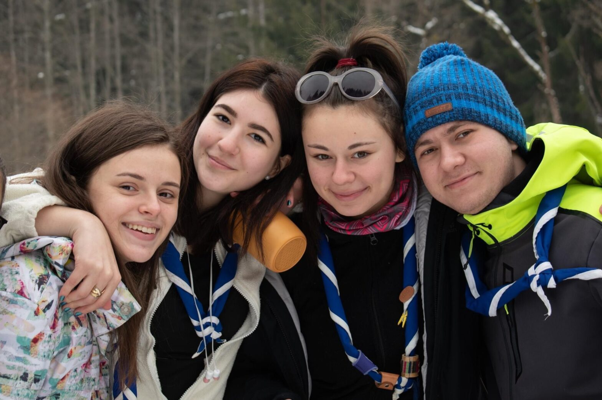
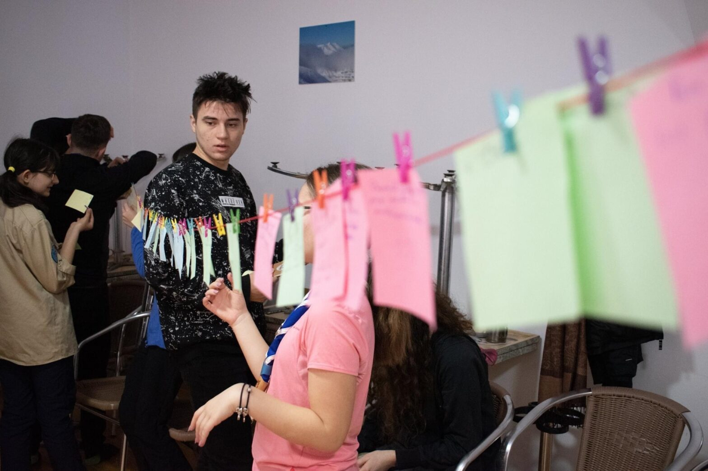
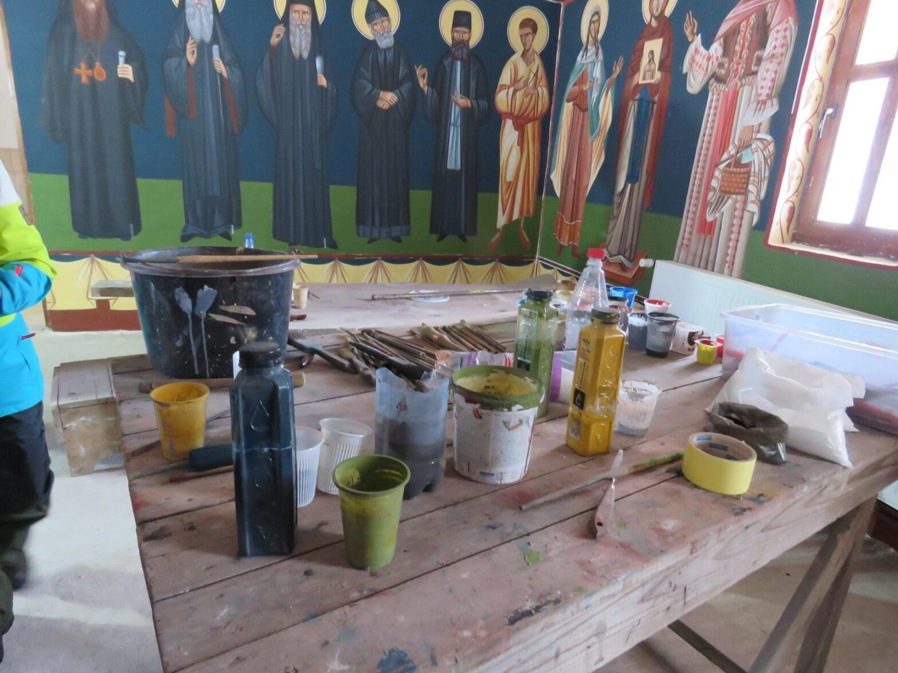
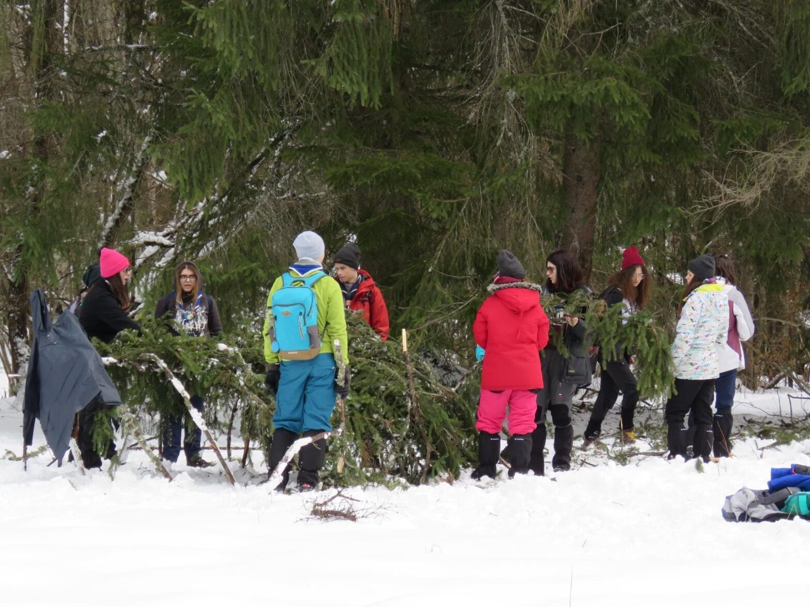

Școala de iarnă 2020 – jurnalul Teodorei

Pe data de 15 februarie urma să plecăm în școala de iarnă din Toplița. Ne-am întâlnit la ora 9 dimineața la Kaufland Basarab pentru a ne aproviziona cu mâncare în cele 4 zile încărcate ce vor veni. Cu chiu cu vai, la ora 12 ajunsesem în gară, pregătiți de 6 ore lungi în tren. Ne-am jucat cărți, am dormit, am mâncat și am așteptat ca așteptarea să ia sfârșit.
“curioși de ce o să ne aștepte când ajungem”
Coborând din tren, am fost întâmpinați de microbuzele ce urmau să ne ducă la cabană. Am avut un drum scurt și tăcut, curioși de ce o să ne aștepte câng ajungem.
Odată ajunși acolo, am fost uimiți de luxul oferit: paturi, dușuri și căldură. Ne-am instalat uluiți în camere și după am fost invitați la ceremonia de deschidere unde aveam să ne primim numele de vikingi. După am mâncat și am avut program pe unități.

“istoria cercetășiei”
A doua zi ora de trezirea a fost 7. Somnoroși, ne-am grăbit la înviorare unde am spus lucruri frumoase despre ceilalți. Micul dejun a fost servit și activitățile în cabană au început. De la atelierul de noduri, istoria cercetășiei și a Cabanei Scout până la atelierul de prim-ajutor și de făcut foc însoțit de cântecele la chitară în timp ce seniorii pregăteau prânzul. După atelierul de foc am fost surprinși de un joc strategic care ne-a dat bătăi de cap. Ziua s-a terminat cu evaluarea jocului și începutul TedEx-ului Cristianei.

~atelierul pictorului de la mănăstire~
Următoarea zi, trezirea a fost din nou la 7. La înviorare am admirat natura și am comparat-o cu lucruri abstracte. Am mâncat repejor și ne-am pregătit de hike. Pe drum, am făcut popasuri unde am făcut un adăpost, am făcut focul, am admirat picturile unei biserici în devenire, am făcut îngerași în zăpadă și am observat cerul. Am mâncat cina copioasă și am continuat TedEx-ul de seara trecută.

~eXplo încercând să construiască un adăpost unde să încapă toată lumea~
În ultima zi, ne-am trezit nevoiți să ne luăm rămas bun de la cabană. Ne-am echipat și am lăsat locul lună.
Cea mai frumoasă amintire, după părerea mea, a fost programul de seară deoarece discuțiile au fost foarte deschise, cu teme pe care nu le abordăm de obicei. Aștept să-mi fac și mai multe amintiri și în următoarele ieșiri 🙂
Teo, eXplo